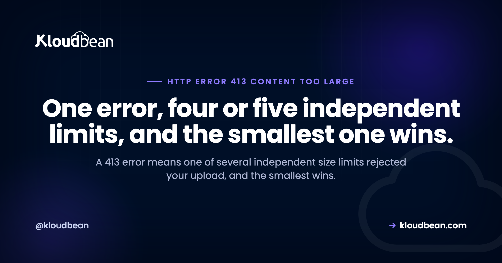

413 Content Too Large: Find the Ceiling That Actually Rejected You

There is a particular afternoon that this error is famous for. You raise upload_max_filesize, restart PHP, try again, and get exactly the same 413. So you raise it further. Same result. The reason is that the request never reached PHP: nginx rejected it at its own limit, which defaults to 1 MB, and PHP was never consulted. A 413 is not one setting. It is a stack of independent ceilings across the edge, the proxy, the runtime, and your framework, and the smallest one in that stack decides your real maximum. The work is identifying which one spoke.
The server is refusing the request because the body is larger than it is willing to accept. RFC 9110 calls it Content Too Large; older documentation and many servers still print Payload Too Large or Request Entity Too Large, and all three are the same code. The important part is that several layers can each enforce their own limit independently, so the effective maximum is the smallest configured value along the path. Raising a limit in the wrong layer produces no change whatsoever, which is why this error has a reputation for being stubborn.
First, find out which layer said no
Everything else follows from this, and it takes one request.
Send a body you know is too large and look at what comes back. The layer that rejected it usually signs its own work:
# Make a file of a known size and post it.
dd if=/dev/zero of=/tmp/big.bin bs=1M count=25
curl -i -X POST -F "file=@/tmp/big.bin" https://example.com/uploadThen read the response, not just the status:
| What you see | Who rejected it |
|---|---|
An HTML error page with nginx in the body or the Server header | nginx, at client_max_body_size |
| An Apache-styled error page | Apache, at LimitRequestBody |
| A JSON error in your application's own shape | Your framework. The request got through the proxy. |
| A Cloudflare-branded page | The edge, before your origin saw anything |
| Nothing useful, and the browser console says CORS | Almost certainly the proxy. See the section below, this one is a trap. |
The nginx error log confirms it outright, and this is the line to look for:
grep "client intended to send too large body" /var/log/nginx/error.log | tailIf that line is present, stop looking at PHP. nginx ended the request and nothing downstream was involved.
Every ceiling, by layer
Work down this table and find the smallest number that applies to you. That is your real limit, regardless of what everything else says.
| Layer | Setting | Default worth knowing |
|---|---|---|
| CDN or edge | Plan-dependent upload cap | Exists on most edge providers and varies by plan. Check yours rather than assuming a number. |
| Load balancer | Request body limit | Provider-specific. Often generous, occasionally not. |
| nginx | client_max_body_size | 1 MB. The single most common culprit, and smaller than a modern phone photo. |
| Apache | LimitRequestBody | Unlimited unless set, but frequently set by a control panel or a vendor config. |
| PHP | upload_max_filesize | Per-file limit. Commonly 2 MB out of the box. |
| PHP | post_max_size | Whole-body limit. Must be at least as large as the above, see the next section. |
| PHP | max_file_uploads | Caps the number of files per request, which bites on multi-file forms. |
| Express | express.json({ limit }) | 100 kb. Surprises JSON APIs receiving base64 or bulk arrays. |
| Django | DATA_UPLOAD_MAX_MEMORY_SIZE | 2.5 MB. |
| Your app | Validation rules | A framework validator rejecting on size returns your own error, not a proxy page. |
The nginx fix, and the two mistakes in it
Since nginx is the usual answer, here is the setting with the parts people get wrong.
http {
# 0 disables the check entirely. Prefer a real number.
client_max_body_size 64m;
}Mistake one: putting it in the wrong block. The directive is valid in http, server, and location. Scoping it to just the upload path is better practice than raising it globally, because it keeps the tighter default protecting every other endpoint:
location /api/upload {
client_max_body_size 64m;
proxy_pass http://127.0.0.1:3000;
}Mistake two: reloading and expecting the app limit to have moved. nginx and your runtime are separate. After nginx accepts the larger body, the next ceiling in the table takes its turn, and you get a 413 again from a different layer. That is not the fix failing. That is the next ceiling, and it is why this error often takes two rounds.
Setting client_max_body_size 0 disables the check. It is occasionally the right call on an internal service, and it is a poor default on anything public, because the limit is what stops an unauthenticated request from filling your disk. A body that does clear the limit is still buffered on its way to your app, which is where the nginx 413 and client_body_buffer_size together matter: past a certain size nginx spools the request to a temp file before your app ever reads it.
The PHP trap: two limits that must move together
This one wastes more time than it should, because the failure is quiet.
An uploaded file arrives inside the POST body. So post_max_size governs the whole envelope and upload_max_filesize governs the file within it, which means post_max_size must be at least as large as upload_max_filesize. Raise the file limit to 64 MB while the post limit sits at 8 MB and your 20 MB upload still fails. Worse, exceeding post_max_size can leave PHP with an empty $_POST rather than a clear error, so your code sees a form that submitted nothing at all.
; Both, and post_max_size should be the larger of the two.
upload_max_filesize = 64M
post_max_size = 72M
max_file_uploads = 20Add a margin to post_max_size, as above, because the body also carries the other form fields and the multipart boundaries. Then confirm what PHP actually loaded, rather than what you think you edited:
php -i | grep -E "upload_max_filesize|post_max_size|max_file_uploads"That command settles a surprising number of arguments, usually by revealing a second php.ini or a pool override that was winning.
The 413 that pretends to be a CORS error
This is the trap worth reading even if your uploads currently work, because it sends people down entirely the wrong path.
Your API sits behind nginx and your front end is on another origin, so your application adds the usual cross-origin headers to its responses. A user posts a file over the limit. nginx rejects it and returns the 413 itself, without ever passing the request to your application. Which means the response carries none of the CORS headers your application would have added, because your application never ran.
The browser sees a cross-origin response with no permission headers and reports exactly what it is designed to report: a CORS failure. Your console says the request was blocked by cross-origin policy. It says nothing about size. So the developer spends an afternoon on CORS configuration that was correct the whole time.
How to recognise it in ten seconds: repeat the request with curl, which does not enforce cross-origin policy, and read the real status. If curl shows 413, your CORS setup is fine and your body is too big. Same trick applies to any error a proxy generates on your behalf, and ERR_BLOCKED_BY_RESPONSE covers the neighbouring cases where a response header is what stops the browser.
# The browser hides the status behind a CORS message. curl does not.
curl -i -X POST -F "file=@/tmp/big.bin" https://api.example.com/upload | head -1413 against its neighbours
Four codes describe four different objections to what you sent. Getting the right one saves you looking in the wrong file.
| Code | The objection |
|---|---|
| 413 Content Too Large | The body is too big |
| 431 | The headers are too big, often a bloated cookie rather than anything you uploaded |
| 415 | The body is the wrong type. Size is irrelevant |
| 408 | The body was fine, it just arrived too slowly |
The 413 and 408 pair is worth a second look if you are debugging large uploads, because a big file over a weak connection can plausibly hit either. Which code you get tells you which wall you met: a size ceiling, or a patience ceiling.
The better answer for genuinely large files
An opinion, since raising limits forever is not a strategy.
Every megabyte you push through your web server occupies a worker for the duration of the transfer. Ten people uploading video at once can starve a server that handles thousands of ordinary page views without noticing. So for anything routinely large, the fix is not a bigger number in a config file. It is to stop routing the bytes through your application at all.
The pattern is a presigned upload. Your application receives a small request asking permission, returns a time-limited signed URL, and the browser sends the file straight to object storage. Your server handles two small JSON requests instead of a 500 MB stream, the 413 question disappears because nothing large ever crosses your proxy, and uploads stop competing with page traffic for workers.
Kloudbean's object storage is S3-compatible with full AWS SDK and CLI support, so this is the ordinary S3 presigned-URL flow rather than anything bespoke, and the same SDK code you would write against S3 works unchanged. The object storage guide covers buckets and access control.
Worth being clear about when not to bother: if your largest upload is a 5 MB profile image, presigned URLs are more machinery than the problem deserves. Raise client_max_body_size and move on. The architecture matters when files are large, frequent, or both.
Where hosting fits, honestly
The honest part first. A 413 is a configuration outcome, and on any platform where you control the proxy config, it is yours to set. No host can guess the right maximum for your application.
What removes the frustration is not having to find the ceilings by trial and error. On Kloudbean the reverse proxy and the runtime are managed together, so the proxy and PHP settings are not two unrelated files in two locations discovered one restart at a time, and application and server logs sit in the same dashboard, which is where the client intended to send too large body line lives. Runtime configuration for Node and Python is editable in the UI rather than over SSH. For the architectural answer above, S3-compatible object storage is built in on every account. Seven cloud providers, free SSL, and free migration assistance if you are moving something across.
The boundary stays put. Managed covers the server, the stack, TLS, backups, and patching. What size of upload your application should accept, and what it does with the file afterwards, is yours.
Related reading
The neighbouring objections: 415 Unsupported Media Type for the wrong content type, 431 Request Header Fields Too Large when it is the headers rather than the body, and 408 Request Timeout when the upload was slow rather than large. When a proxy error hides behind a browser message, ERR_BLOCKED_BY_RESPONSE. For the upload architecture, S3-compatible object storage. On the proxy layer, nginx as a reverse proxy for Node. And if the request failed after reaching your code rather than before, 500 Internal Server Error.
Stop guessing which limit rejected the upload.
Managed servers across seven clouds with the reverse proxy and runtime managed together, runtime configuration editable in the UI, and application plus server logs in one dashboard. S3-compatible object storage built in for direct uploads. Free SSL issued and renewed. Free migration assistance included. Start at kloudbean.com or see pricing.
Managed proxy · Runtime config in the UI · S3-compatible storage · App and server logs · Free SSL
FAQ
What does a 413 error mean?
The server is refusing the request because the body is larger than it will accept. RFC 9110 names it Content Too Large, while older documentation and many servers print Payload Too Large or Request Entity Too Large. All three refer to the same status code.
Why does raising upload_max_filesize not fix my 413?
Because the request is being rejected before PHP sees it. nginx enforces its own client_max_body_size, which defaults to 1 MB, and if that is what rejected the body then no PHP setting is involved at all. Check the nginx error log for the line about a client intending to send too large a body, and raise the proxy limit first.
How do I find out which layer is returning the 413?
Post an oversized body with curl and read the whole response rather than just the status. An nginx or Apache branded error page means the proxy rejected it. A Cloudflare page means the edge did. An error in your application's own JSON shape means the request got through and your framework objected. The nginx error log confirms the proxy case outright.
What is the default client_max_body_size in nginx?
1 MB. That is smaller than a photo from any current phone, which is why it accounts for so many 413s. It is valid in the http, server and location blocks, and scoping the larger value to just your upload path is better practice than raising it globally.
Why do I need to change both post_max_size and upload_max_filesize?
Because an uploaded file travels inside the POST body, so both limits apply. post_max_size governs the whole request body and must be at least as large as upload_max_filesize, with some margin for the other form fields and multipart boundaries. If post_max_size is exceeded, PHP can end up with an empty POST array rather than a clear error.
Why does my 413 show up as a CORS error in the browser?
Because nginx returned the 413 itself without passing the request to your application, so the response carries none of the cross-origin headers your app would have added. The browser sees a cross-origin response with no permission headers and reports a CORS failure, hiding the real status. Repeat the request with curl, which ignores cross-origin policy, and you will see the 413.
What is the difference between 413 and 431?
413 is about the request body being too large. 431 is about the request headers being too large, which is usually an oversized cookie or a very long authorisation token rather than anything you deliberately uploaded. Different part of the request, different setting, different fix.
Is it safe to set client_max_body_size to 0?
It disables the size check entirely, which is occasionally reasonable on an internal service and a poor idea on anything public. The limit is part of what stops an unauthenticated request from filling your disk or tying up workers. Prefer a real number that reflects your largest legitimate upload.
What is the best way to handle very large file uploads?
Keep them out of your web server. Have your application issue a time-limited presigned URL and let the browser upload straight to object storage, so your server handles two small requests instead of streaming the whole file. The 413 question disappears because nothing large crosses your proxy, and uploads stop competing with page traffic for worker slots. For a 5 MB profile image this is overkill, so just raise the limit.